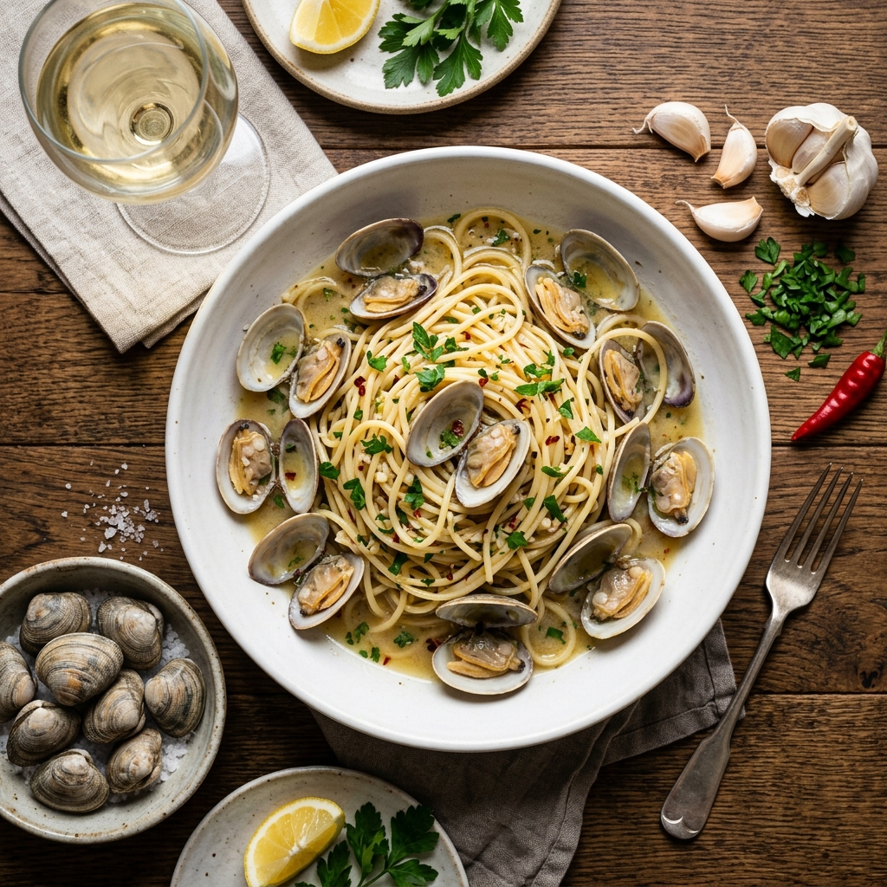
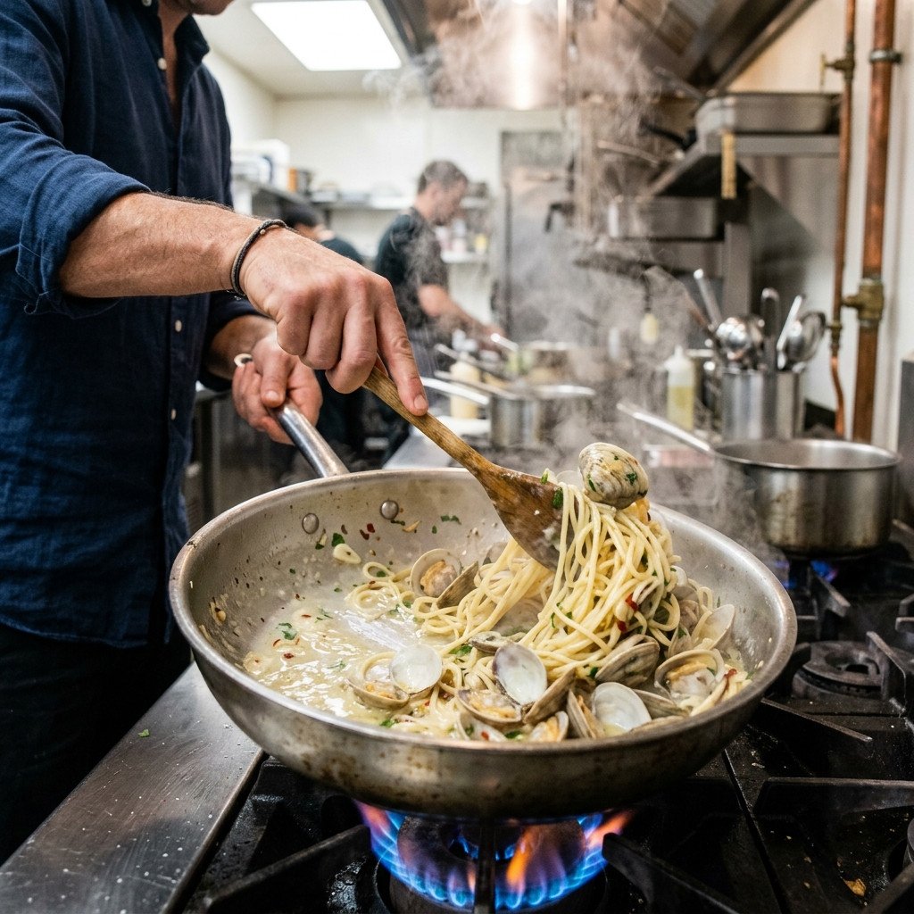
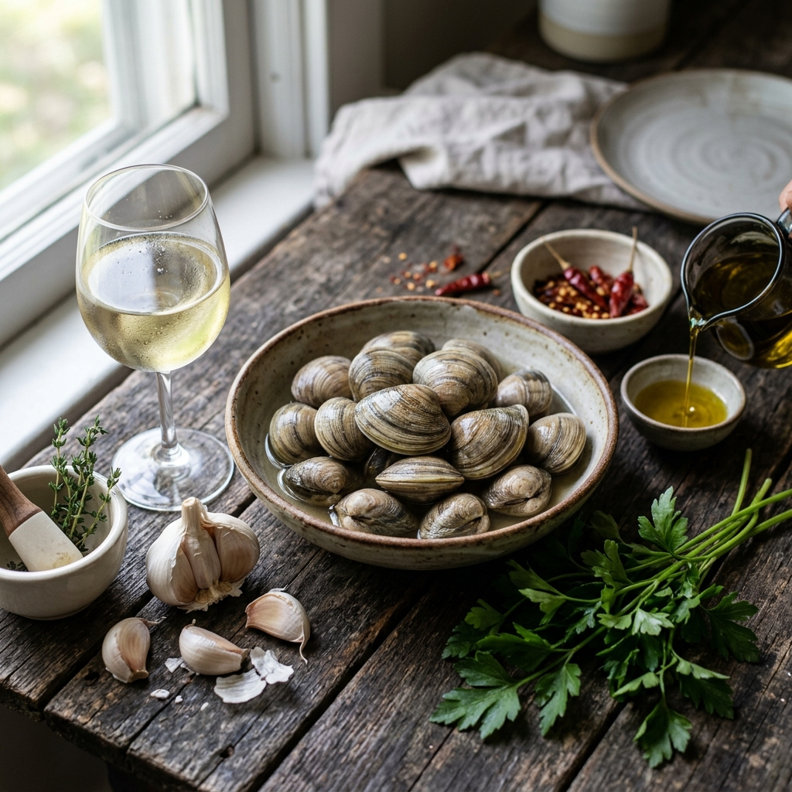

봉골레 파스타 황금 레시피 2026 — 바지락과 화이트 와인의 유화 기법으로 완성하는 이탈리아 바다의 맛
🍝 핵심 요약
봉골레 파스타(Spaghetti alle Vongole)는 이탈리아 나폴리에서 탄생한 클래식 조개 파스타입니다. 한국에서는 바지락이 가장 접근하기 쉬운 재료이며, 이 레시피에서는 바지락과 드라이 화이트 와인의 유화(Emulsion)를 통해 버터를 쓰지 않고도 풍부하고 크리미한 소스를 완성하는 기법을 상세히 다룹니다. 핵심은 파스타 삶은 물(전분수)과 올리브 오일이 와인 국물과 만나 유화되는 과정을 제어하는 것입니다. 레스토랑에서만 먹던 그 맛을 집에서도 구현할 수 있습니다.
🌊 봉골레 파스타란? — 바다를 한 접시에 담는 이탈리아의 지혜
봉골레(Vongole)는 이탈리아어로 조개를 뜻합니다. '스파게티 알레 봉골레'는 직역하면 '조개 스파게티'이며, 이탈리아 남부, 특히 나폴리 지방의 어부들이 갓 잡아 올린 조개와 마늘, 올리브 오일, 화이트 와인만으로 만든 검소하고 진솔한 요리에서 시작되었습니다.
오늘날 봉골레 파스타는 비앙코(Bianco, 토마토 없는 흰색)와 로쏘(Rosso, 토마토 넣은 빨간색) 두 가지 버전이 있으며, 이 레시피에서는 조개의 자연 풍미를 가장 순수하게 느낄 수 있는 비앙코 버전을 다룹니다. 조개의 감칠맛, 화이트 와인의 산미, 마늘의 향이 삼위일체를 이루는 것이 비앙코의 핵심입니다.
한국에서 봉골레 파스타를 만들 때 가장 많이 사용하는 조개는 바지락입니다. 이탈리아에서는 베네레(Veneridi) 조개를 쓰지만, 바지락은 국물이 진하고 감칠맛이 풍부하여 오히려 더 강한 맛을 내기도 합니다. 봉골레용 조개는 크기가 너무 크면 질겨지므로, 바지락 크기(2~3cm)가 이상적입니다.
🛒 재료 준비 매뉴얼 — 2인분 기준 완벽 정량 가이드
| 분류 | 재료 | 분량 (2인분) | 구매 팁 |
|---|
| 주재료 | 바지락 (해감 완료) | 300g | 마트 해감 제품 또는 2시간 자가 해감 |
| 주재료 | 스파게티 (1.7~1.9mm) | 160g | 디 체코 또는 바릴라 권장 |
| 주재료 | 드라이 화이트 와인 | 150ml (약 소주컵 2.5개) | 피노 그리지오 또는 소비뇽 블랑 권장 |
| 부재료 | 마늘 | 5쪽 (크게 슬라이스) | 국산 마늘 추천 |
| 부재료 | 페페론치노 (건홍고추) | 2개 | 없으면 청양고추 1개 대체 가능 |
| 부재료 | 이탈리안 파슬리 | 2큰술 (다진 것) | 없으면 생략 가능 |
| 양념 | 엑스트라 버진 올리브 오일 | 4큰술 | 조리용과 마무리용 분리 |
| 양념 | 굵은 소금 | 적당량 (파스타 삶는 물용) | 바닷물 염도(약 1%) 맞춤 |
| 선택 | 버터 (무염) | 10g (선택 사항) | 소스 마무리 단계에서 추가 시 크리미함 증가 |
✅ 와인 선택의 중요성
"요리에는 아무 와인이나 써도 된다"는 잘못된 통념입니다. 봉골레에서 와인은 소스의 핵심 재료이므로 드라이하고 산미가 적당한 화이트 와인을 사용해야 합니다. 달콤한 스위트 와인이나 산화된 와인은 소스 전체를 망칩니다. 편의점이나 마트에서 5,000~10,000원대 피노 그리지오나 소비뇽 블랑을 구입하시면 됩니다.

완성된 봉골레 파스타 플레이팅 — 바지락 조개와 화이트 와인 소스의 황금 조합 / AI 제작 이미지
🐚 조개 해감 및 전처리 — 모래 한 톨 없는 깔끔한 조개 만들기
아무리 훌륭한 레시피도 해감이 불완전하면 모래가 씹히는 불쾌한 결과가 됩니다. 바지락 해감은 두 가지 방법이 있습니다.
방법 1: 소금물 해감 (기본, 2시간 소요)
물 1리터에 소금 1큰술(약 10g)을 녹여 1% 염도의 소금물을 만듭니다. 바지락을 넣고 신문지나 검은 비닐로 어둡게 덮어 2시간 두면, 조개가 어두운 환경에서 활발히 입을 열어 모래를 토해냅니다. 해감 후 흐르는 물에 조개끼리 비벼서 껍데기 표면의 이물질도 제거합니다.
방법 2: 수돗물 + 소금 + 쇠젓가락 (급할 때, 30분)
소금물에 쇠젓가락을 넣으면 미세 전류가 발생해 조개의 입 열기를 촉진한다는 민간 기법입니다. 완전한 해감은 아니므로 시간이 충분하다면 방법 1을 권장합니다.
⚠️ 주의사항
해감 중 입을 열지 않는 조개는 이미 죽은 것일 가능성이 높습니다. 조리 후에도 열리지 않는 조개는 반드시 제거하세요. 열리지 않는 조개를 억지로 열어서 먹는 것은 식중독 위험이 있습니다.
🍳 황금 비율 소스 공식 — 유화(Emulsion)의 과학
봉골레 소스의 정수는 유화입니다. 기름(올리브 오일)과 물(와인 국물)은 원래 섞이지 않지만, 파스타 삶은 물의 전분이 유화제 역할을 하여 두 액체를 부드럽게 섞어줍니다. 이 유화된 소스가 파스타에 코팅되어 레스토랑 같은 윤기와 농도를 만들어냅니다.
[봉골레 소스 황금 비율]
화이트 와인 150ml
+ 바지락 국물 (자연 방출)
+ 파스타 삶은 물 3~4큰술 (전분 농도 핵심)
+ 엑스트라 버진 올리브 오일 4큰술
→ 팬에서 강한 불로 에멀전화
핵심: 소스가 뽀얗게 탁해지면서 한 가지 액체처럼 보이면 유화 성공
실패 신호: 기름이 위에 떠있고 분리된 상태 = 전분수 추가 후 재시도
👨🍳 단계별 조리 가이드 — 실패 없는 스텝 바이 스텝
Step 1: 파스타 삶기 (조리와 병행)
넉넉한 냄비에 물 2리터를 끓이고, 소금을 20g(큰술 2개) 넣습니다. 이 염도가 파스타에 간을 배게 하는 기초입니다. 스파게티를 넣고 포장지 표기 시간보다 2분 적게 삶습니다. 파스타는 이후 팬에서 소스와 함께 추가로 익으므로 알 덴테보다 좀 더 딱딱한 상태로 건져야 합니다. 삶은 물 1컵(약 200ml)은 반드시 보관합니다.
Step 2: 마늘 향 추출 — 저온 대류법
넓은 팬(26~28cm)에 올리브 오일 3큰술을 붓고 슬라이스 마늘을 넣은 후 약불에서 천천히 가열합니다. 마늘이 노릇노릇해질 때까지 3~4분간 저온으로 볶습니다. 이 과정이 마늘 향을 오일 전체에 배게 하는 핵심 단계입니다. 마늘을 강불에서 태우면 쓴맛이 나므로 절대 강불을 사용하지 않습니다.
Step 3: 바지락 투입 및 와인 증발
마늘이 충분히 향을 낸 후, 해감한 바지락을 팬에 넣고 강불로 올립니다. 30초 후 화이트 와인 150ml를 한 번에 붓습니다. 와인의 알코올이 증발하면서 '치익' 소리와 함께 김이 올라옵니다. 뚜껑을 덮고 2~3분간 강불로 조개가 입을 열 때까지 찝니다. 이때 페페론치노를 함께 넣으면 알싸한 매운맛이 배어듭니다.
Step 4: 조개 분리 및 소스 농축
조개가 모두 입을 열면 집게로 조개를 팬 밖으로 꺼냅니다 (과열 방지). 팬에 남은 국물을 강불로 약 1분간 졸여 농도를 높입니다. 이 국물이 소스의 베이스입니다. 짭짤하고 향긋한 냄새가 올라오면 성공입니다.
Step 5: 파스타 투입 및 유화 단계 (가장 중요)
삶아 둔 파스타를 팬에 투입하고, 파스타 삶은 물을 2큰술씩 추가하면서 팬을 앞뒤로 흔들며 소스와 파스타가 결합되게 합니다. 올리브 오일 1큰술을 마저 붓고 계속 팬을 흔들면, 소스가 뽀얗게 탁해지며 파스타에 코팅되기 시작합니다. 이 뽀얀 상태가 유화 성공의 신호입니다. 불을 끄기 30초 전에 꺼내 둔 조개를 다시 넣고 가볍게 섞습니다.
Step 6: 마무리 플레이팅
불을 끄고 이탈리안 파슬리를 뿌립니다. 원하시면 무염 버터 10g을 마지막에 넣어 저어주면 소스에 한층 더 부드럽고 크리미한 질감이 더해집니다. 깊고 넓은 파스타 볼에 담고, 위에 조개를 올려 플레이팅하면 레스토랑 비주얼이 완성됩니다.

봉골레 파스타 조리 중 유화 단계 — 와인과 올리브 오일이 결합되며 뽀얀 소스가 완성되는 순간 / AI 제작 이미지
🎯 체크포인트 — 실패의 원인과 해결법
봉골레 파스타에서 가장 자주 발생하는 실수와 그 원인, 해결책을 정리합니다.
| 문제 | 원인 | 해결 방법 |
|---|
| 소스가 묽고 기름이 분리됨 | 전분수 부족, 유화 미완성 | 파스타 삶은 물 1~2큰술 추가 후 강불에서 흔들기 |
| 파스타가 뻣뻣함 | 삶은 시간 부족 또는 소스에서 가열 시간 부족 | 소스에서 1~2분 더 흡수시키기 (물 조금 추가) |
| 조개 맛이 약함 | 와인 양 부족 또는 조리 시간 짧음 | 다음 번에 와인 200ml로 증량, 국물 더 졸이기 |
| 마늘이 탔음 | 초기 단계에서 강불 사용 | 처음부터 약불 유지, 마늘이 노릇해질 때까지만 |
| 모래가 씹힘 | 해감 불완전 | 소금물 해감 2시간 충분히 + 조개 껍데기 비벼 씻기 |
| 간이 과하게 짬 | 파스타 삶는 물 과다 추가 | 와인 국물 자체가 짭짤하므로 소금 추가는 마지막에 확인 후 |
👨🍳 전문가 팁 — 레스토랑 맛의 비밀 3가지
Tip 1: 조개는 과열하지 않는다
조개가 입을 열자마자 바로 꺼내는 것이 핵심입니다. 계속 불 위에 두면 조개 살이 질겨집니다. 파스타와 합치는 마지막 단계에서 30초만 함께 가열하면 충분합니다.
Tip 2: 파스타 삶는 물의 온도 관리
삶은 물은 뜨거운 상태로 보관해야 유화가 잘 됩니다. 식은 물을 쓰면 올리브 오일이 굳으면서 분리될 수 있습니다. 삶은 물 용기를 불 옆에 두거나 전자레인지에 데워서 사용하세요.
Tip 3: 팬을 흔드는 '만테카레(Mantecare)' 기법
이탈리아 셰프들이 파스타 소스를 완성할 때 팬을 앞뒤로 강하게 흔드는 동작을 '만테카레'라고 합니다. 이 동작이 파스타와 소스를 완전히 유화시키는 핵심 기술입니다. 집에서는 팬을 흔들기 어려우면 실리콘 스패출러로 빠르게 저어주면 유사한 효과를 얻을 수 있습니다.
🍷 영양 정보 및 어울리는 음식·주류 페어링
봉골레 파스타(2인분 기준)의 영양 요약입니다.
| 영양소 | 1인분 (약 400g) | 특이 사항 |
|---|
| 열량 | 약 450~520 kcal | 버터 추가 시 약 50 kcal 증가 |
| 단백질 | 약 28~32g | 바지락 고단백 (100g당 단백질 약 11g) |
| 탄수화물 | 약 55~65g | 스파게티 주성분 |
| 지방 | 약 12~15g | 올리브 오일 불포화 지방산 |
| 나트륨 | 약 700~900mg | 조개 자체 염분 주의, 추가 소금 최소화 |
페어링 추천: 봉골레 파스타에는 만든 것과 같은 드라이 화이트 와인이 가장 잘 어울립니다. 피노 그리지오(이탈리아), 소비뇽 블랑(프랑스·뉴질랜드), 알바리뇨(스페인) 등이 훌륭한 선택입니다.
봉골레 이전에 제공하기 좋은 전채는 가벼운 카프레제(모차렐라·토마토·바질) 또는 감바스 알 아히요입니다. 봉골레 후에는 산뜻한 레몬 셔벗이나 판나코타로 마무리하면 이탈리안 풀코스처럼 즐길 수 있습니다.

봉골레 파스타 주재료 — 싱싱한 바지락, 드라이 화이트 와인, 마늘, 올리브 오일 / AI 제작 이미지
🔄 응용 버전 — 한국 재료로 변형하는 봉골레
기본 레시피를 마스터했다면 한국 재료를 활용한 응용 버전에 도전해 보세요.
봉골레 로쏘 (토마토 버전): Step 3에서 바지락 입이 열린 후 방울토마토 8개를 반으로 잘라 넣고 2분간 함께 볶습니다. 토마토의 산미가 더해져 밝고 활기찬 맛이 됩니다.
청주 버전 (와인 없을 때): 화이트 와인 대신 청주(미림 소량 포함)를 사용해도 됩니다. 청주는 단맛이 약간 있으므로 와인보다 15% 적게 사용하고, 레몬즙 1큰술을 추가해 산미를 보충합니다.
크림 봉골레: 유화 단계 직전에 생크림 50ml를 추가하면 크리미한 봉골레 크림파스타가 됩니다. 다만 생크림이 들어가면 조개 향이 약해지므로 바지락 양을 약 20% 늘리거나 다시마 우린 물을 50ml 더하는 것이 좋습니다.
📋 봉골레 파스타 빠른 참고 요약표
| 항목 | 내용 |
|---|
| 조리 시간 | 총 25분 (해감 시간 별도) |
| 난이도 | 중급 (유화 기술만 익히면 쉬워짐) |
| 핵심 재료 | 해감 바지락 300g, 드라이 화이트 와인 150ml, 스파게티 160g |
| 성공 열쇠 | 파스타 삶은 물 + 올리브 오일 유화 = 뽀얀 소스 |
| 보관 | 냉장 불가 (조개 파스타 즉시 섭취 권장) |
| 칼로리 | 약 450~520 kcal / 1인분 |
#봉골레파스타
#봉골레레시피
#파스타만들기
#바지락파스타
#이탈리아요리
#화이트와인파스타
#홈파티레시피
#유화기법
#스파게티레시피
#조개파스타